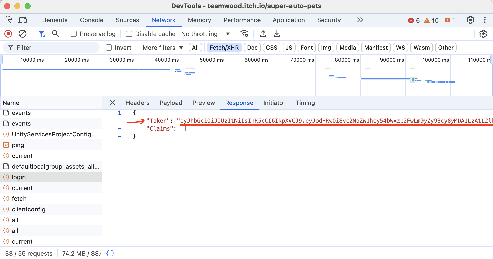

CONTRIBUTE
Enter SAP Login:
Submitting your login will allow us to get a server auth token and upload your last 20 games automatically!
(our servers never see it, so your login stays private)
(Note that this should effectively log you out of any of your current SAP games, so you'll need to close & reopen the Super Auto Pets app afterwards)
Email
Password
Enter Authorization Token:
To get your Authorization Token, open up the Developer Console on the Super Auto Pets browser page and go to the Network tab, then copy the response info on your login request:

Auth Token
Upload!
Or, get your auth token manually